Fixing Their App So
You Can Eat
A UCSD group project adding a new allergen-specific filter to Google Maps — reducing the research burden on the 50%+ of U.S. households navigating food allergies and special diets.

The Problem
Over 50% of U.S. households include someone with a dietary restriction (NIH, 2022), and 70% of Americans eat out regularly (YouGov, 2024). For those with restrictions, the simple act of picking a place to eat becomes a nontrivial task.
We're proposing a new filter inside Google Maps that:
- Filters restaurants by specific allergens and diets (peanut, soy, gluten, dairy, halal, kosher, vegan, etc.)
- Highlights possible menu items for each restaurant
Saving time and improving accessibility.
Business Impact
With over 50% of households reporting to have some sort of dietary restriction or allergy, there is a large demographic for this solution. According to Nielsen, ~66% of consumers value transparency in their food ingredients, many of which are due to allergen concerns (FMI & NielsenIQ, 2021). With these metrics combined, it's clear there is a market for our design.
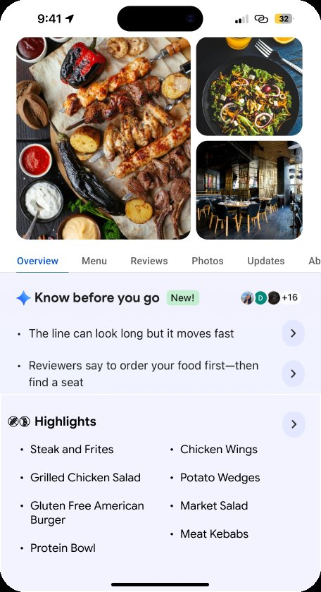
Adding a new section for users to get a quick idea of potential options already cuts down so much time from their search.
Starting with… User Research
Surveyed user needs:
- Faster menu checking
- Saved allergen profiles
- Ease of use
Users can end up spending long periods of time just looking for a restaurant or appropriate menu item, making a quick, reliable solution very useful.
Where The System Falls Short
Beyond a lack of information from Google Maps, we also saw a major breakdown in trust between the user and the restaurant.
Interviewees had problems with:
- A server assuming an item didn't have soy, causing the person to have an allergic reaction
- Boba shops not differentiating ingredients (like milk powder vs. whole milk) in their signage
Unfortunately there can be fundamental issues residing in the system's method for providing a safe dining experience — issues that could be partially addressed by having a standard for checking allergens beforehand through an app.
So What Do We Do?
- Add our new filter amongst the existing filters
- Indicate it is a dropdown menu with the intuitive arrow icon
*Some designs will change; final designs can be seen at the top and bottom of this page.
The user selects their specific restrictions. Initial designs were split on using block or slider formats (the sliders also categorizing the restrictions) — the cross-contamination slider adds an extra layer of accessibility control for certain users.
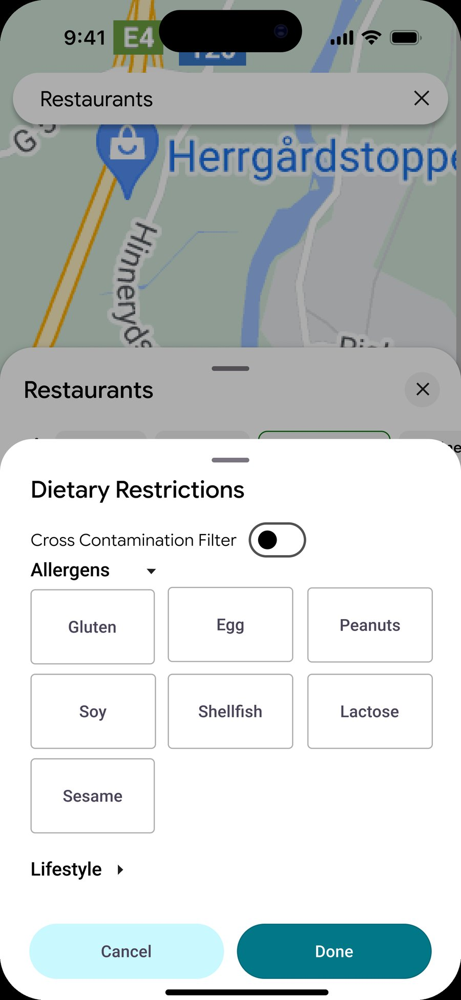
Initial Design Feedback
Users preferred the simplicity of the block buttons. They also preferred category sorting (intolerances, lifestyle), and we changed the cross-contamination slider's color to better indicate its on-off state.
Quick note: a restaurant may have gluten free items on its menu and therefore appear in the search results. However, that restaurant could qualify simply because it has small food items such as sides or snacks, and may not be sufficient enough for a person looking to enjoy a full meal.
After entering their filters, the user receives a list of possible restaurants. Each restaurant has an "Accessible Options" box to give users an idea of potential food items, reducing time spent scanning individual menus. This step changed "Menu Highlights" to "Accessible Options" for better clarity, redesigned the Dietary Filter button to be more consistent with Google's own design language, and omitted the "Vegetarian" title to reduce visual clutter.
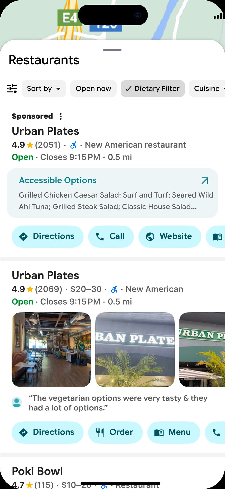
When clicking on a specific restaurant, the Google AI can assist in checking the dietary accessibility of a restaurant. The Accessible Options list is more extensive and more easily readable, and from that list, the user can choose to look at the entire menu using the arrow button.
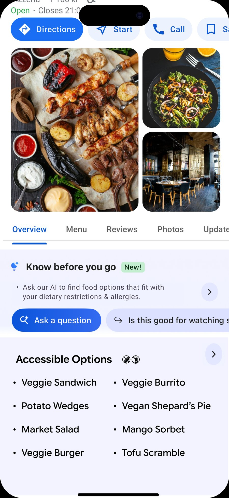
The Takeaway
Our users do in fact have real concerns about restaurant searching, whether it be as simple as saving some time looking through menus to being confident that the food is safely served. Our design aims to minimize these problems and allow people to search for places to eat quickly and assuredly, having tools to help guide safe and accommodating decision-making.
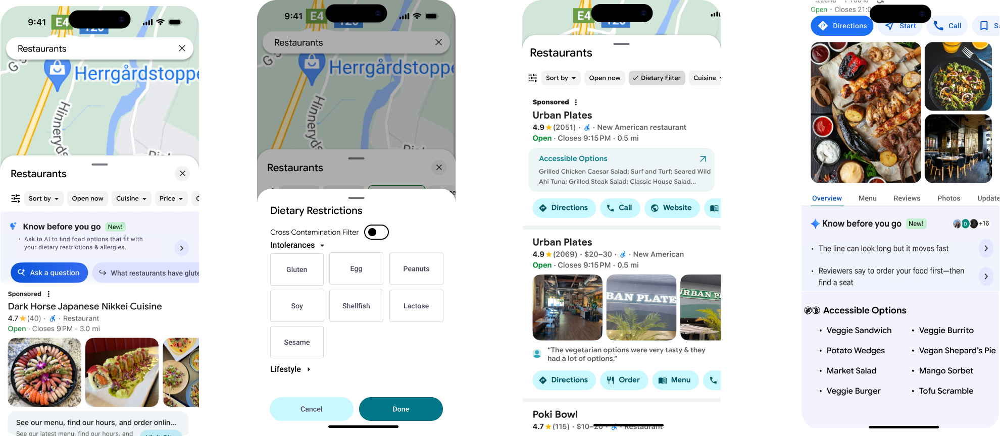
UI/UX & Web
Designer
Startup contract work, case studies, and everything in between — building experiences that look polished and feel right.


Design at the intersection of cognition and culture
Hi, I'm Asher — a UI/UX designer and creative problem solver who's just finished a degree in Cognitive Science with a specialization in Design & Interaction at UC San Diego.
My work lives at the intersection of visual design, human behavior, music culture, and digital storytelling. I build experiences that look polished and feel intuitive — whether that's a UX case study, a live band website, or a full branding system.
Right now I'm looking for internship and early-career opportunities where I can bring strong visual thinking, adaptability, and creative energy to a team.
Download Résumé ↗Sept 2022 – June 2026
Creative Technology · Branding
Let's make something
worth seeing.
A Digital Genesis for
a Contractor
We start with a contracting company attempting to move into the laser measuring industry, requiring a website to advertise and legitimize its business.
My Role
Jan 2026
I was asked to create and maintain a website for a single company. No guidance. No template. Full freedom.
The company founder only asked that it look nice and be functional: customers should be able to do everything through the website, and potential clients could find it through a web search.
I was given the Wix account access and provided with preexisting logos and a few images, all the rest being designed and sourced by myself.
The header allowed users to quickly navigate (specifically to the consultation), improving efficiency and minimizing searching for the desired section.
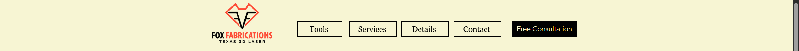
Text-Only Outline
~1 day
I believe all good work starts with a clear direction, often best formed with the use of an outline. Before I designed anything visually, I needed the information and ideas written out so I could both edit the information quickly and lay out the page textually.
Every user enters a website with some goal in mind, typically to gather information or (in a business context) receive a service. I wanted to present information clearly and quickly to answer most questions before a user may even have them, writing in my outline what specific questions a user may have about our company, and how the site would answer them.
Overall, this outline allowed me to have a general idea about both the website's presented information and the general flow of the user's experience.
UI/UX Planning
~1 week
I prioritized two things with this website: ease of use and minimalism. Since I wasn't working with a team and the website didn't require much functionality, I kept it all to one page, ensuring a user wouldn't be too overwhelmed with information.
I focused on three things:
- Outlining the purpose of the service
- Explaining the results and deliverables to clients
- Creating a simple contact card
All of this would be contained to the home page and presented quickly so users would be able to easily navigate and understand the company's service.
The Final Layout
~2 weeks
So it's time to finally put the plan into motion. I divided the site into 5 basic sections + header & footer, moving from the most general information at the top to the most specific near the bottom. Additionally, I wanted a button that takes the user right to the contact form in case they weren't interested in any of the reading (saves them scrolling down). It's a small convenience but I always admire when a website allows you to quickly reach your destination instead of having to peruse it and take up precious seconds.
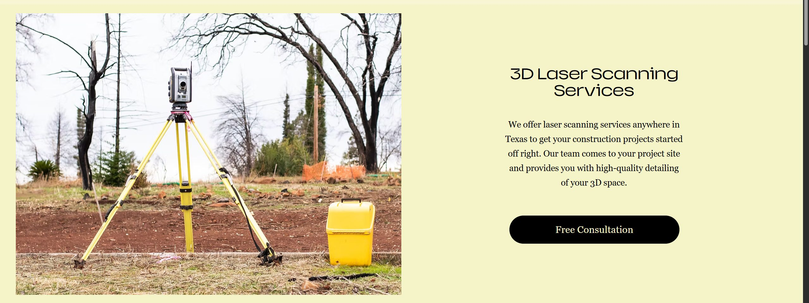
Moving on, we need to show the user that we've got something serious going on. Here, I emphasize the Leica BLK 360 to give the service some ethos and potentially give an unfamiliar product (Texas 3D Laser) a familiar tool (the BLK 360), utilizing the large photo and color inversion to make this section unique amongst the others.
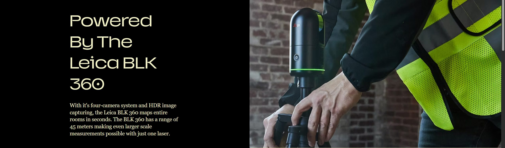
Often times, a user may be browsing a website to get a better understanding of if a service can be of use to their situation. I've gathered a list of common instances where laser measurements may be useful for a client and provided helpful images and descriptions to intuitively display Texas 3D Laser's potential projects. The list came from doing research on what similar companies offer and collecting information from our company's general contractor (very important to compare to other sites).
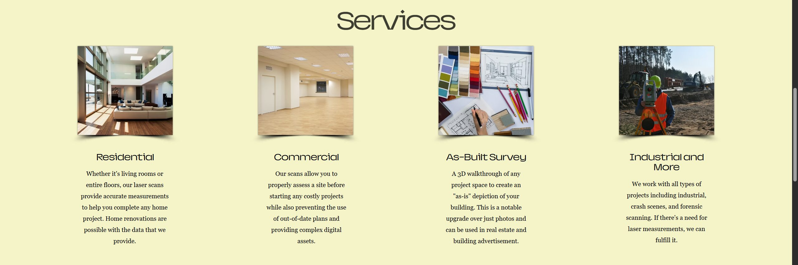
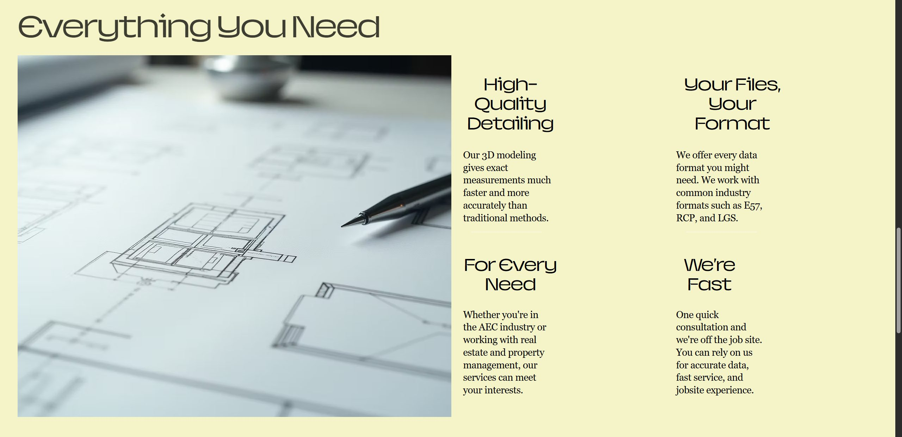
The Result
The initial intent with the website was to facilitate company business through a more professional means than word of mouth, while also organizing clients in a more logistical way through the contact card. Additionally, the website needed to be found through a search engine so new clients could be attracted.
Both of these goals were accomplished: the clientele could easily indicate their interest in the service using the website, and potential clients can find the company easily just by searching for key words.
Most of the client information will be gathered during the consultation. Therefore the contact card is short and simple to ensure clients have no problem filling it out.
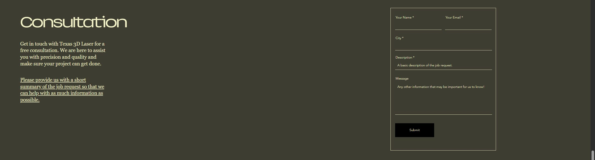
Simple keywords prompt Google to show our website above other competing websites in the Texas area.
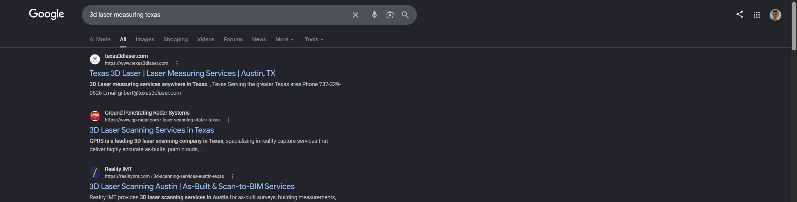
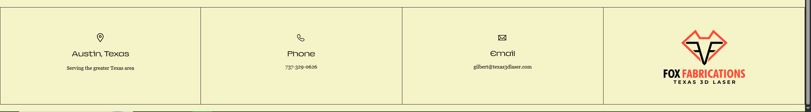
Outcome

The finished, live site at texas3dlaser.com
Both primary goals were achieved: the website became the main channel for existing clients to formally indicate project interest, and the site is now discoverable via organic search for laser modeling and 3D scanning services in Austin. The client reported inbound contact from the site within the first month of launch.
Design Lab Boot Camp
+ Wayfarer
A functional website prototype for a fictional travel company, built while completing a 3-month design certification covering over 80 hours of UX coursework.
The Project
Wayfarer is a fictional travel agency prototype created as the capstone for Design Lab's UX boot camp. For 8 weeks I worked through an asynchronous course covering typography, responsive design, functional prototyping in Figma, and mentor review sessions.
Wayfarer felt like it needed a warm color theme with bright, sunny imagery to get users excited about future travels. The design process started with hand-drawn sketches — thinking about the user perspective first.
Sketches & Process
The course encouraged starting with hand-drawn sketches before jumping to Figma — a discipline I've brought into all subsequent work.


Certification
Upon completing the course and prototype, I received a formal UX Academy Foundations certification from Design Lab covering UI principles, existing design research, Figma prototyping, and mentor-reviewed deliverables.

Spotify
Teardown
A structured critique of Spotify's interface — examining what works, what doesn't, and where the experience leaves users behind.
What I Examined
Navigation structure
How Spotify's bottom nav has evolved — and whether the shift from 5 tabs to 3 changed discoverability for podcasts and audiobooks.
Discovery flows
The tension between algorithmic recommendation and intentional browsing — whether the current UI serves both or favors one at the expense of the other.
Information density
How Spotify manages large libraries — playlist management, liked songs, and the cognitive load of organizing music at scale.
Cross-platform consistency
Where mobile and desktop diverge in interaction model, and whether those divergences feel intentional or accidental.
View the Full Analysis
The complete teardown is documented in a Google Drive folder with annotated screenshots, written critique, and proposed redesign directions.
Open Full Teardown ↗The Arkangels'
Website
A design concept for my band The Arkangels — an early project I look back on to see how far I've come as a designer.

The Project
I designed this in 2023 when I was just getting into UI/UX and Figma — a rudimentary concept for what The Arkangels' website could look like. I look back on it now as a clear marker of how far I've developed as a designer.
Personal note: This project sits at the overlap of my two main creative worlds — design and music. Being inside both made it easier to make decisions with conviction, rather than designing from the outside in.
Design Approach
Identity-first layout
A band website needs to communicate personality and energy before information. Typography, color, spacing, and imagery were all chosen to reflect the band's character rather than generic conventions.
Digital storytelling
Beyond just listing shows and music, the structure aimed to tell the band's story — who they are, where they've been, what they're building.
The Arkangels'
Posters
A gig poster series advertising The Arkangels' concerts and events — designed in Canva and Photoshop to bring the band's identity into the physical world.
The Poster Series
A few posters made to advertise my band and promote past concerts and events. Designing for print after working primarily in digital is a discipline shift — constraints change, the viewing context changes, and the permanence of the medium demands a different kind of intentionality.


On print design: Designing for something physical — something that gets stapled to a telephone pole or pinned to a venue wall — creates a different kind of accountability than designing for screens. The constraints are different but the craft standard is the same.